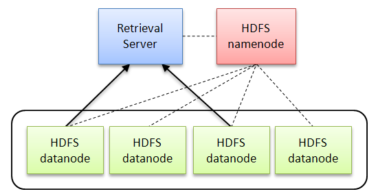

This tutorial provides a guide to batch and interactive retrieval with Ivory on the venerable TREC disks 4 and 5 document collection, which is distributed by NIST and used in many Text Retrieval Conferences (TRECs). Although the collection is over a decade old, it is still used as a starting point for information retrieval research. This guide will cover both indexing the collection, performing retrieval runs with queries from the TREC 2004 robust track, and interactive querying.
Ivory: Getting Started with TREC Disks 4-5
Getting the Collection
The first task is to obtain the collection (from NIST). We're assuming you have it in hand already. A standard "view" of the disks is to ignore the Congressional Record (CR) and Federal Register (FR), so the collection is often written shorthand as TREC 45 (-CR,FR) or something similar.
There are a total of 472,525 documents in the collection as described above, distributed in a number of files; see complete list of all files. Since Hadoop doesn't work well will lots of small files, the first step is to prepare the collection by concatenating all the documents into a large file. This is most easily done with a Perl or Python script. See this simple Perl script, but it should be very easy to write your own.
Building the Inverted Index
The complete Ivory preprocssing and indexing pipeline is described in detail on this page. Here, we mostly focus on what to do, as opposed to how it works.
Let's get started! Prior to indexing, we must first preprocess the
collection. The goal of this step is to create a compact
representation of the original document collection. To preprocess the
collection, use the program
ivory.driver.PreprocessTREC. The program takes four
command-line arguments:
- [input-path] path to the document collection
- [index-path] path to index directory
- [num-mappers] number of mappers to run
- [num-reducers] number of reducers to run
Here's a sample invocation (notice that the input path is simple one large file):
hadoop jar ivory.jar ivory.driver.PreprocessTREC \ /umd-lin/shared/collections/trec/trec4-5_noCRFR.xml /umd-lin/shared/indexes/trec 100 10
Once the collection has been preprocessed, we can use the program
ivory.driver.BuildIPIndex to build the index. The program
takes three command-line arguments—the same four used in the
preprocessing step except the first. Here's a sample invocation:
hadoop jar ivory.jar ivory.driver.BuildIPIndex /umd-lin/shared/indexes/trec 100 10
Next, let's build the document forward index. This forward index provides a mechanism for accessing the actual document text. It's essentially a big lookup table of docnos to byte offsets in the collection file on disk (and also the length of each document).
The program for doing this is actually included in the Cloud9 library. Here's a sample invocation:
hadoop jar cloud9.jar edu.umd.cloud9.collection.trec.BuildTrecForwardIndex \ /umd-lin/shared/collections/trec/trec4-5_noCRFR.xml /tmp/findex/ \ /umd-lin/shared/collections/trec4-5_noCRFR.findex.dat \ /umd-lin/shared/indexes/trec/docno-mapping.dat
Performing Batch Retrieval
Now we're ready to perform batch retrieval! To demonstrate, we're
going to use topics from the TREC 2004 robust track. In information
retrieval parlance, topics define information needs, from which the
actual queries derive. In the data/trec/ directory, you'll find
two configuration files:
data/trec/run.robust04.basic.xml: retrieval models and parametersdata/trec/queries.robust04.xml: queries (TREC 2004 robust track)
The first configuration file specifies six different models:
- robust04-dir-base: language modeling framework, Dirichlet prior, simple query likelihood.
- robust04-dir-sd: language modeling framework, Dirichlet prior, sequential dependence model using MRFs.
- robust04-dir-fd: language modeling framework, Dirichlet prior, full dependence model using MRFs.
- robust04-bm25-base: bm25 term weighting, simple bag-of-words queries.
- robust04-bm25-sd: sequential dependence model using MRFs, with bm25 term weighting.
- robust04-bm25-fd: full dependence model using MRFs, with bm25 term weighting.
You might want to tweak the index location and output paths
in data/trec/run.robust04.basic.xml,
specifying where the index resides and where the retrieval results go.
After that, put both configuration files in HDFS. The
class ivory.smrf.retrieval.RunQueryHDFS performs a
batch ad hoc retrieval run: it takes the two XML configuration
files as input and produces results in standard TREC format on HDFS.
Here's a sample invocation:
hadoop jar ivory.jar ivory.smrf.retrieval.RunQueryHDFS \ /umd-lin/jimmylin/run.robust04.basic.xml /umd-lin/jimmylin/queries.robust04.xml
Here's what happens: RunQueryHDFS executes a Hadoop
job with a single mapper, and inside the mapper a retrieval engine is
instantiated. The retrieval engine loads in the configuration files
and performs batch ad hoc retrieval, reading indexes directly
from HDFS (more on this below).
After the job is complete, grab the output files (one for each model) from HDFS—these are results in standard TREC format. The first column is the topic number, the third column is the TREC document identifier, the fourth column is the rank order, and the fifth column is the score (log probability, in this case). Document relevance information (qrels) is included below:
- data/trec/qrels.robust04.noCR.txt: original qrels file; does not contain CR documents, but contains FR documents.
- data/trec/qrels.robust04.noCRFR.txt: modified qrels file; does not contain CR and FR documents.
With the trec_eval program, you should be able to evaluate the runs. See our experimental results page (under "Basic models") for the effectiveness numbers you should be getting.
Alternatively, you may want to run things locally (i.e., from a
local machine), instead of remotely on the cluster. In that case, you
should copy the index over to your local machine. The
class ivory.smrf.retrieval.RunQueryLocal performs
batch ad hoc retrieval on a local index. Pass the XML
configuration files as command-line parameters, just like
RunQueryHDFS.
Ivory contains a generic launch script that automatically includes all the right classpaths, automatically generated by Ant. Open up a shell and change directory into Ivory. Type:
ant
Ant should automatically build ivory.jar and create a launch script
in etc/, either run.sh
or run.bat depending on your operating system.
On the command line, here's the invocation to perform an ad hoc retrieval run:
etc/run.sh ivory.smrf.retrieval.RunQueryLocal \ docs/data/trec/run.robust04.basic.xml docs/data/trec/queries.robust04.xml
You should get exactly the same results as with RunQueryHDFS.
Searching Interactively
Now, what about interactive retrieval? We of course know that MapReduce is designed for large batch jobs and is not suitable for real-time interactive applications. Specifically, HDFS is designed for high-throughput streaming reads, not low-latency access to (relatively) small amounts of information. But of course, interactive retrieval requires rapid access to postings corresponding to query terms...
The standard solution is to pull the indexes out of HDFS into another architecture that supports low-latency operations (e.g., Katta is a framework for managing distributed Lucene indexes). However, this presents a data-management challenging (copying large index files around), and naturally, you lose the benefits of HDFS (e.g., redundancy through replication).
However, we've been playing with retrieval engines that directly read postings from HDFS. This may at first seem like a stupid idea, but this approach does have merits. Sure, most likely you'll be reading postings from a remote datanode, but you gain the benefit of a homogeneous environment (everything is Hadoop). Early indications suggest that this architecture give reasonable performance (we're working on some ideas that we believe will make this architecture just as fast as the alternative).
In summary, the Ivory retrieval architecture looks like the following:

What we've done is folded a retrieval engine into a webapp. This is easy because Hadoop already uses Jetty for its webapps. Furthermore, we folded the webapp inside a mapper (albeit a degenerate one), so that we launch the retrieval sever like any other Hadoop job.
Here are two configuration files for starting the server (copy over to HDFS):
- data/trec/server.trec.ql.xml: configuration file for launching a query-likelihood server.
- data/trec/server.trec.bm25.xml: configuration file for launching a bm25 server.
Each configuration file specifies the index location and also the
location of the forward index into the document collection (so you can
actually examine the retrieved results). The
class ivory.server.RunDistributedRetrievalServers
launches the server. Here's a sample invocation:
$ hadoop jar ivory.jar ivory.server.RunDistributedRetrievalServers /umd-lin/jimmylin/server.trec.ql.xml /tmp/config 10/05/23 23:00:28 INFO server.RunDistributedRetrievalServers: Reading configuration to determine number of servers to launch: 10/05/23 23:00:28 INFO server.RunDistributedRetrievalServers: - sid: trec 10/05/23 23:00:28 INFO server.RunDistributedRetrievalServers: Writing configuration to: /tmp/config/config-1.txt 10/05/23 23:01:36 INFO mapred.FileInputFormat: Total input paths to process : 1 10/05/23 23:01:39 INFO server.RunDistributedRetrievalServers: Waiting for servers to start up... 10/05/23 23:01:49 INFO server.RunDistributedRetrievalServers: ... 10/05/23 23:01:59 INFO server.RunDistributedRetrievalServers: ... 10/05/23 23:02:10 INFO server.RunDistributedRetrievalServers: ... 10/05/23 23:02:10 INFO server.RunDistributedRetrievalServers: All servers ready! 10/05/23 23:02:10 INFO server.RunDistributedRetrievalServers: Host information: 10/05/23 23:02:10 INFO server.RunDistributedRetrievalServers: sid=trec, XX.XXX.X.XX:7001
The first command-line argument is the path to the configuration file in HDFS. The second argument is the path of a temporary directory in HDFS. (As a side note, you can start up multiple retrieval servers simultaneously but simply specifying multiple index locations.)
What happens is that the mapper starts up, initializes the retrieval engine, and fires up a webapp by creating a Jetty HTTP server listening on a particular port. Of course, we have no idea which cluster node ran the mapper, so the webapp writes out its hostname and port to HDFS. Meanwhile, the client submitting the job polls HDFS waiting for the file to appear. Once it does, the client reads the config file and tells you where the webapp is. If you navigate to that hostname/port in a browser, you'll get access to a since search interface where you can put in a query and look at retrieved documents.
Finally, there's a
class ivory.server.RunLocalRetrievalServer that
supports interactive retrieval on a local machine. Here's a sample
invocation:
$ etc/run.sh ivory.server.RunLocalRetrievalServer docs/data/trec/server.trec.ql.xml 9000 10/05/24 00:54:15 INFO server.RunLocalRetrievalServer: Reading configuration... 10/05/24 00:54:15 INFO server.RetrievalServer: Initializing RetrievalServer for "trec"... 10/05/24 00:54:15 INFO server.RetrievalServer: - sid: trec 10/05/24 00:54:15 INFO server.RetrievalServer: - index: /umd-lin/shared/indexes/trec 10/05/24 00:54:15 INFO server.RetrievalServer: - findex: /umd-lin/shared/collections/trec4-5_noCRFR.findex.dat 10/05/24 00:54:15 INFO util.RetrievalEnvironment: Loading doclengths table... 10/05/24 00:54:15 INFO data.DocLengthTable: Docno offset: 0 10/05/24 00:54:15 INFO data.DocLengthTable: Number of docs: 472525 10/05/24 00:54:16 INFO data.DocLengthTable: Total of 472525 doclengths read 10/05/24 00:54:16 INFO util.RetrievalEnvironment: IndexPath: /umd-lin/shared/indexes/trec 10/05/24 00:54:16 INFO util.RetrievalEnvironment: PostingsType: ivory.data.PostingsListDocSortedPositional 10/05/24 00:54:16 INFO util.RetrievalEnvironment: Collection document count: 472525 10/05/24 00:54:16 INFO util.RetrievalEnvironment: Collection length: 134888069 10/05/24 00:54:16 INFO util.RetrievalEnvironment: Tokenizer: ivory.util.GalagoTokenizer 10/05/24 00:54:16 INFO util.RetrievalEnvironment: Loading postings index... 10/05/24 00:54:16 INFO util.RetrievalEnvironment: Number of terms: 978058 10/05/24 00:54:16 INFO util.RetrievalEnvironment: Done! 10/05/24 00:54:21 INFO server.RetrievalServer: RetrievalServer successfully initialized. 10/05/24 00:54:21 INFO server.RetrievalServer: Staring server... 10/05/24 00:54:21 INFO mortbay.log: Logging to org.slf4j.impl.Log4jLoggerAdapter(org.mortbay.log) 10/05/24 00:54:21 INFO mortbay.log: jetty-6.1.14 10/05/24 00:54:22 INFO mortbay.log: Started SocketConnector@0.0.0.0:9000 10/05/24 00:54:22 INFO server.RetrievalServer: Server successfully started!
Once the program starts, you can navigate
to http://localhost:9000/ in a browser and access a simple
search interface. It's important to note that you're running this
program outside of MapReduce, so that's why you want to use the launch
script etc/run.sh, which is automatically generated by
Ant.
And that's it. We've covered indexing, batch retrieval, and interactive retrieval. Enjoy!